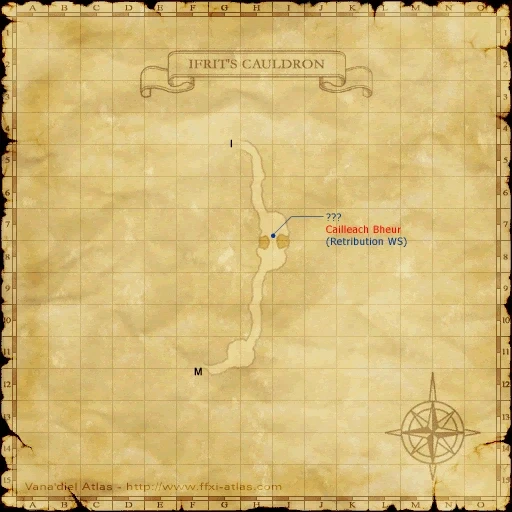

Level 75 reference · Zenith rules
|


Image source
Walkthrough
- Talk to Shantotto in Windurst Walls who will give you the Pole of Trials and the Weapons Training Guide (key item).
- Use the Pole of Trials until the latent effect disappears.
- How to remove the latent effect:
- You must perform Weapon Skills and Skillchains on monsters that con Easy Prey or higher.
- You receive 1 point for opening/soloing a weaponskill, 2 points for closing a Lv.1 Skillchain, 3 points for closing a Lv.2 Skillchain.
- You cannot create any Lv.3 chains at this point using a staff.
- You must accumulate 300 total points.
- To check to see if the latent effect has disappeared, simply unequip and re-equip the Pole of Trials and if you do not get the bonus stats, you are done.
- Once you no longer receive the latent effect bonus, head back to Windurst Walls and trade the Pole of Trials back to Shantotto, who will take the weapon from you and give you a Map to the Annals of Truth (key item) and tell you to head to Ifrit's Cauldron.
- Take the East entrance of Ifrit's Cauldron. Make a right at the first junction, head past the first Flame Spout, straight through the cave and follow the path around the crater to the drop point at I-7/8. Enter the cave immediately to your left. Sneak and Invis will be needed the entire time.
- Follow the path until you reach a large room with Bombs, Bats, and Ash Lizards (H-7).
- 2 ???s will be in this room. The ??? in the middle of the lava bridge will be the one that triggers the NM Skeleton Cailleach Bheur.
- The best place to camp is at the far tunnel, past the 2 ???s. Clear the 2 bats and the bomb if necessary, then pull to the tunnel. You have 16 minutes before enemies start respawning.
- Once the NM is dead, re-examine the ??? to obtain the Annals of Truth (key item).
- Bring this back to Shantotto for your reward.
Game Description
Client: Shantotto (Manor, Windurst Walls)
Summary:
- Doctor Shantotto has recruited you into her staff-wielding team for the coming contest. Practice your skills with the staff you have been given until you've reduced it to splinters. What lies ahead? Glory and honor? Or blood and broken bones...?
Adapted from Eden Wiki: Blood and Glory · Contributors and history · CC BY-SA 4.0. Revision 9132. Layout, links and optional background text adapted for Zenith.